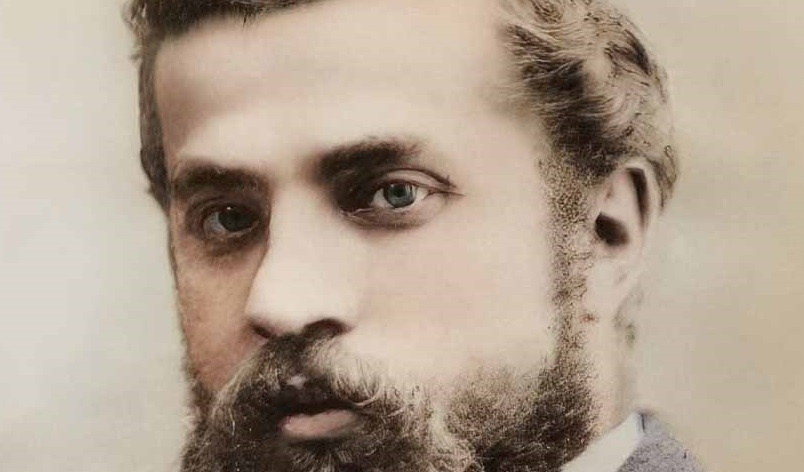

Lumière sur un héritage en mouvement

Dans le cadre de la rédaction d’un reportage dédié à la Sagrada Familia, j’ai souhaité mettre en couleur un portrait d’Antoni Gaudi. Bien connu, cette photographie représente l’une des seules représentations du visage de l’architecte.
Le reportage proposait une lecture accessible du caractère innovant de la Sagrada Familia. L’idée principale résidait dans la mise en lumière d’un chantier qui traverse les siècles et qui fait appel.Avec les outils d’aujourd’hui, l’achèvement du projet du visionnaire approche. Cette œuvre culturelle est un perpétuel dialogue entre innovations passées et présentes.
La colorisation de ce visage a pour vocation de rendre plus accessible l’architecte. J’ai utilisé Photoshop essentiellement, pour rendre l’image plus nette, mais également la coloriser. Concernant le choix de la couleur des yeux, je me suis renseigné par le biais d’œuvres biographiques ; livres et documentaires.
A travers, ce photomontage, j’ai souhaité illustrer avec l’image de l’artiste ce dialogue entre passé et présent ; mais également rendre hommage à son héritage toujours en mouvement.